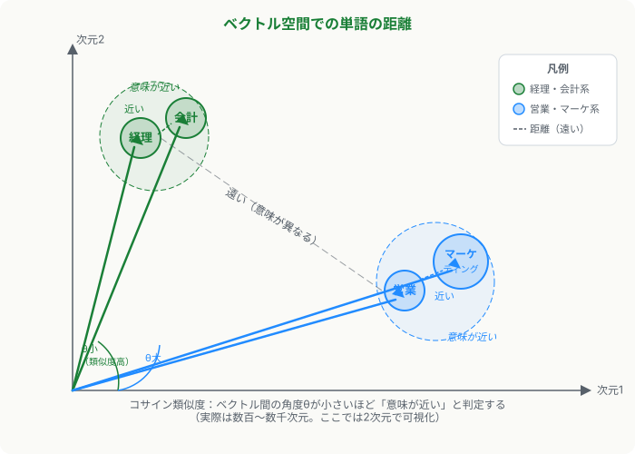

第5章 NLP・ベクトル化・類似度
この章の要点
- テキストを数値ベクトルに変換する「埋め込み」により、言葉の意味の近さをコンピュータが計算できるようになる
- コサイン類似度を使えば「経理」と「会計」が近く、「経理」と「営業」が遠いと定量的に判定できる
- この技術は「求人票と職務経歴書の意味的なマッチング」に直接応用でき、第6章のケーススタディへ続く
なぜ文字列を数値にするのか
コンピュータは数値しか扱えません。「経理経験あり」という文字列を直接比較しても、「決算業務の経験あり」が同じ意味だとは判定できません。NLP（自然言語処理）では、テキストを数値の列（ベクトル）に変換することで、意味の計算を可能にします。
この変換を埋め込み（embedding）と呼びます。適切に学習された埋め込みでは、「意味が似ている言葉ほど、ベクトル空間で近い位置に配置される」という性質が生まれます。
キービジュアル：ベクトル空間での距離

実際の埋め込みは数百〜数千次元ですが、概念は同じです。「経理」と「会計」はベクトル空間で近い位置に、「経理」と「営業」は遠い位置に置かれます。この性質を利用すれば、単なる文字列一致を超えた「意味的な近さ」を測れます。
コサイン類似度：方向で近さを測る
2つのベクトルの「近さ」を測る代表的な指標がコサイン類似度（cosine similarity）です。値は−1から1の範囲で、1に近いほど「同じ方向を向いている＝意味が近い」ことを示します。
コサイン類似度の直感
長さが違っても「方向」が同じなら類似度は高くなります。「少し経理の経験あり」と「豊富な経理の経験あり」は、ベクトルの長さは違っても方向は近いため、高い類似度が得られます。文章の長さによる影響を受けにくい点が実務でも便利です。
もう一つの指標はユークリッド距離（Euclidean distance）です。文章の絶対的な「長さ」（情報量）も考慮したい場合に使います。テキストマッチングでは、コサイン類似度が使われることの方が多いです。
有名な例：「王 − 男 + 女 ≈ 女王」
埋め込みモデルの特性を象徴する有名な例として「王（king）− 男（man）+ 女（woman）≈ 女王（queen）」があります。これは、ベクトル演算が単語の意味関係を捉えていることを示しています。「王」から「男性性」のベクトルを引き、「女性性」のベクトルを足すと、「女王」に近いベクトルが得られるというものです。
この性質は職種マッチングにも活きます。「事務」から「一般事務」のベクトルを引き、「専門性」を加えれば、「経理事務」に近づくような演算が（近似的に）成立します。
古典的手法：TF-IDF
埋め込みモデルが普及する前の代表的な手法がTF-IDF（Term Frequency-Inverse Document Frequency）です。文書中で頻繁に出現し、かつ他の文書では珍しい単語を重要とみなしてスコア化します。
| 観点 | TF-IDF（古典） | 埋め込みモデル（現代） |
|---|---|---|
| 意味の理解 | 単語の一致で判断。「経理」と「会計」は別単語として扱う | 意味的な近さを表現。「経理」と「会計」を近いベクトルで表せる |
| 学習コスト | 事前学習不要。計算が軽い | 大規模な事前学習が必要（ただし公開モデルを利用可能） |
| ゆらぎへの対応 | 表記ゆれ・類義語に弱い | 類義語・言い換えに強い |
| 導入難易度 | 数行のコードで動く | APIで手軽に使えるが、精度チューニングが必要な場合も |
主な埋め込みモデル
現在は事前学習済みの埋め込みモデルをAPIとして利用できます。ゼロから学習させる必要はありません。代表的なものを整理します。
- Sentence-BERT（SBERT）：文（センテンス）レベルの埋め込みに特化したモデル。日本語版も公開されている
- OpenAI Embeddings API：
text-embedding-3-largeなど。APIを叩くだけで高品質な埋め込みを取得できる - Cohere Embeddings API：多言語対応に強みを持つ埋め込みAPI
実務のポイント
自社のドメイン知識（業界固有の用語、職種名の略称など）が埋め込みモデルに正しく表現されているとは限りません。「SE」が「Software Engineer」と「証券会社の社員」で意味が分かれる場合など、ファインチューニングや業界特化モデルの検討が必要になることがあります。
第6章への橋渡し：マッチングへの応用
ここまで学んだ技術を整理すると、「言葉の意味の近さを数値で測れる」という能力が手に入りました。これは求人票（JD）と職務経歴書（CV）のマッチングに直接応用できます。
求人票の要件テキストをベクトル化し、職務経歴書の経験テキストをベクトル化します。両者のコサイン類似度が高ければ「意味的に近いマッチ」と判定できます。「経理経験5年」という求人と「決算業務・仕訳処理を担当」という職務経歴は、文字列として一致しなくても、ベクトル空間では近い距離に配置されます。
第3章との接続：なぜ予測モデルではなく類似度か
第3章で学んだ成約予測モデル（教師あり学習）は、ラベルノイズや外的要因の混入によって精度が出なくなることがあります。類似度マッチングは「過去の成否ラベル」に依存しません。代わりに「過去の成功事例テキスト」を物差しとして使い、新しい案件との近さを測ります。データの「汚染」を受けにくい構造です。
次章のケーススタディでは、この類似度マッチングを事務派遣領域の実業務に当てはめ、既存のルールベースロジックをスキルタクソノミーとして再活用する具体的なアプローチを検討します。
もっと知りたい人へ
- arXiv / Word2Vec 原論文（Mikolov et al., 2013） — 「王 − 男 + 女 ≈ 女王」を示した単語埋め込みの先駆け研究。概要だけ読んでも単語ベクトルの直感が掴める
- OpenAI / Embeddings ガイド — テキストの埋め込みAPIの使い方、類似度検索への応用例、コサイン類似度の実装例を公式ドキュメントで確認できる
- Cohere / Embeddings ドキュメント — 多言語対応の埋め込みAPIの仕様と活用例。日本語テキストへの応用を検討する際に参照できる
- Sentence-Transformers 公式サイト — 文レベル埋め込みのオープンソースライブラリ。日本語対応モデルのリストとサンプルコードを確認できる